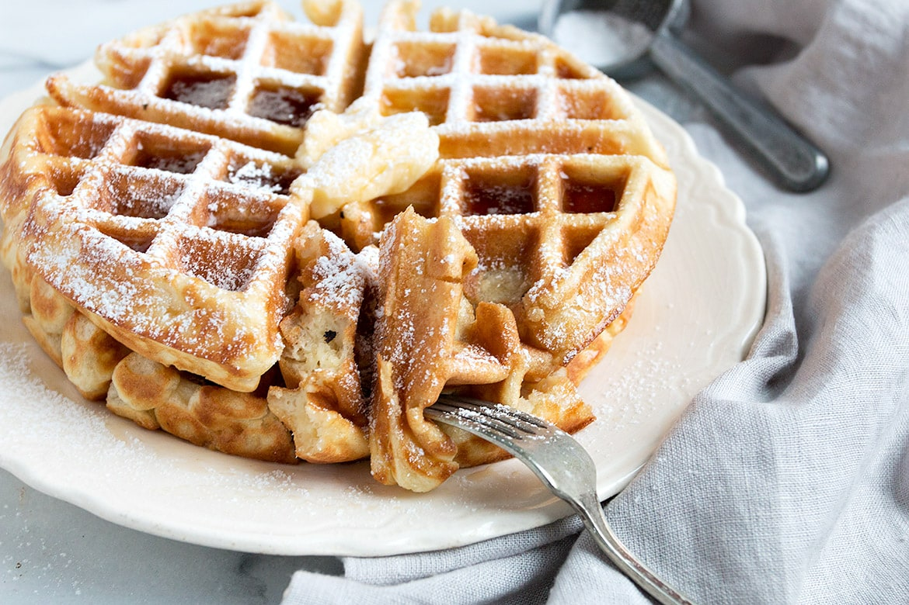

Classic Waffles

Description:
A lovely, crispy waffle perfect for the morning.
Ingredients
- 2 cups all-purpose flour
- 1 teaspoon baking powder
- 1 teaspoon baking soda
- 1 teaspoon salt
- 2 cups eggnog
- 2 eggs, beaten
- 4 tablespoons butter, melted
Steps
- Mix flour, baking powder, baking soda, and salt together in a bowl. Add eggnog, eggs, and butter; mix well.
- Preheat a waffle iron according to manufacturer's instructions. Pour 1/4 of the batter into the preheated iron and cook until waffle is crisp and golden, about 5 minutes. Repeat with remaining batter.
go back